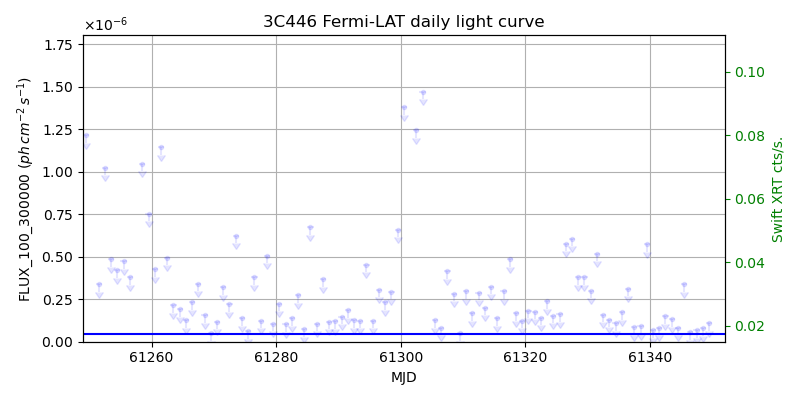
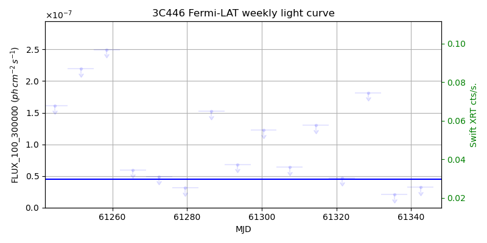
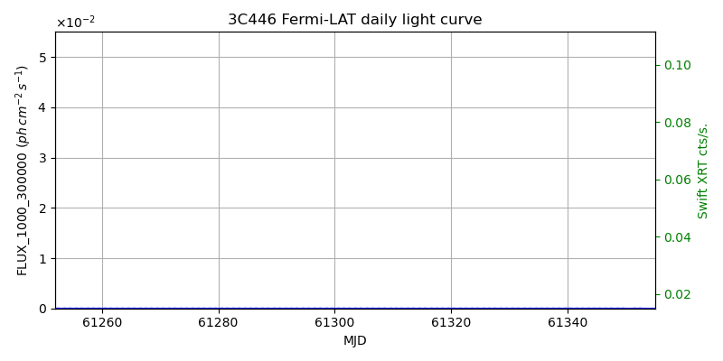
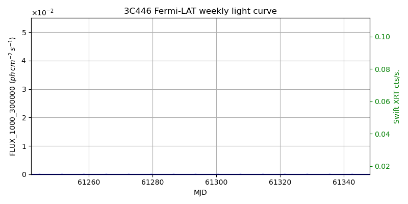

LAT Lightcurve site: https://fermi.gsfc.nasa.gov/ssc/data/access/lat/msl_lc/source/3C_446
Swift site: https://www.swift.psu.edu/monitoring/source.php?source=3C446
NED: Query
Time of last update of this page: UT: 2026-11-13 16:29 (MJD: 61357.687)
| Property | Value |
|---|---|
| R.A. | 22:25:47.28 |
| Dec. | -4:57:00.0 |
| z | 1.404 |
| 3FGL SpectrumType | PowerLaw |
| 3FGL PL Index | 2.36 |
| 3FGL Flux_100_300000 | 4.44e-08 1 / (s cm2) |
| 3FGL Flux_1000_300000 | 1.95e-09 1 / (s cm2) |
| 3FGL Flux >200 GeV | 1.45e-12 1 / (s cm2) |
| 3FGL Extrap. Crab >200 GeV | 0.01 |
| 3FGL Flux After EBL Absorption >200GeV | 3.92e-15 1 / (s cm2) |
| 3FGL EBL Crab Fraction >200GeV | 0.00 |

| MJD | dMJD | Flux | dFlux | Frac3FGL | FracCrab>200GeV | EBLFracCrab>200GeV |
|---|---|---|---|---|---|---|
| 61348.50 | 0.50 | 8.06e-08 | 0.00e+00 | 0.00 | 0.00 | 0.00 |
| 61349.50 | 0.50 | 1.10e-07 | 0.00e+00 | 0.00 | 0.00 | 0.00 |
| 61350.50 | 0.50 | 1.72e-07 | 0.00e+00 | 0.00 | 0.00 | 0.00 |
| 61351.50 | 0.50 | 1.27e-07 | 0.00e+00 | 0.00 | 0.00 | 0.00 |
| 61352.50 | 0.50 | 7.61e-08 | 0.00e+00 | 0.00 | 0.00 | 0.00 |

| MJD | dMJD | Flux | dFlux | Frac3FGL | FracCrab>200GeV | EBLFracCrab>200GeV |
|---|---|---|---|---|---|---|
| 61321.50 | 3.50 | 4.73e-08 | 0.00e+00 | 0.00 | 0.00 | 0.00 |
| 61328.50 | 3.50 | 1.82e-07 | 0.00e+00 | 0.00 | 0.00 | 0.00 |
| 61335.50 | 3.50 | 2.08e-08 | 0.00e+00 | 0.00 | 0.00 | 0.00 |
| 61342.50 | 3.50 | 3.21e-08 | 0.00e+00 | 0.00 | 0.00 | 0.00 |
| 61349.50 | 3.50 | 2.27e-08 | 0.00e+00 | 0.00 | 0.00 | 0.00 |

| MJD | dMJD | Flux | dFlux | Frac3FGL | FracCrab>200GeV | EBLFracCrab>200GeV |
|---|---|---|---|---|---|---|
| 61348.50 | 0.50 | 1.71e-08 | 0.00e+00 | 0.00 | 0.00 | 0.00 |
| 61349.50 | 0.50 | 1.40e-08 | 0.00e+00 | 0.00 | 0.00 | 0.00 |
| 61350.50 | 0.50 | -1.00e+00 | 0.00e+00 | 0.00 | 0.00 | 0.00 |
| 61351.50 | 0.50 | 1.45e-08 | 0.00e+00 | 0.00 | 0.00 | 0.00 |
| 61352.50 | 0.50 | 1.56e-08 | 0.00e+00 | 0.00 | 0.00 | 0.00 |

| MJD | dMJD | Flux | dFlux | Frac3FGL | FracCrab>200GeV | EBLFracCrab>200GeV |
|---|---|---|---|---|---|---|
| 61321.50 | 3.50 | 9.86e-09 | 0.00e+00 | 0.00 | 0.00 | 0.00 |
| 61328.50 | 3.50 | 1.78e-08 | 0.00e+00 | 0.00 | 0.00 | 0.00 |
| 61335.50 | 3.50 | 1.05e-08 | 0.00e+00 | 0.00 | 0.00 | 0.00 |
| 61342.50 | 3.50 | 2.63e-09 | 0.00e+00 | 0.00 | 0.00 | 0.00 |
| 61349.50 | 3.50 | 2.43e-09 | 0.00e+00 | 0.00 | 0.00 | 0.00 |
--------------------------------------------------------- Using user-supplied coords: 22:25:47.28 -4:57:00.0 2000 --------------------------------------------------------- FLWO UT night of: 2026-11-14 Local Sid. @ Midnight: 03:09 Sunset (-15.0) (local, UT): 18:35 01:35 Sunrise (-15.0) (local, UT): 05:42 12:42 Moonrise (local, UT): Moonset (local, UT): 20:50 03:50 Moon phase: 0.22 --------------------------------------------------------- AzTime LSID UT Obj_el Obj_az Mn_el Mn_az Sep. --------------------------------------------------------- 18:35 21:44 01:35 52.1 162.3 20.1 218.2 53.6 19:05 22:14 02:05 53.4 174.5 16.0 223.7 53.4 19:35 22:44 02:35 53.3 187.1 11.6 228.6 53.2 20:05 23:14 03:05 51.8 199.2 6.9 233.2 53.0 20:35 23:44 03:35 49.2 210.2 2.0 237.3 52.8 21:05 00:14 04:05 45.5 219.9 -2.2 241.2 52.6 21:35 00:44 04:35 41.0 228.1 -9.0 244.8 52.3 22:05 01:14 05:05 36.0 235.3 -14.6 248.2 52.1 22:35 01:44 05:35 30.6 241.4 -20.4 251.4 51.8 23:05 02:14 06:05 24.8 246.8 -26.2 254.5 51.5 23:35 02:44 06:35 18.8 251.7 -32.1 257.5 51.2 00:05 03:14 07:05 12.7 256.1 -38.1 260.6 50.9 00:35 03:45 07:35 6.5 260.3 -44.2 263.8 50.6 01:05 04:15 08:05 0.5 264.3 -50.2 267.1 50.3 01:35 04:45 08:35 -6.2 268.2 -56.3 270.9 50.0 02:05 05:15 09:05 -12.7 272.2 -62.4 275.3 49.7 02:35 05:45 09:35 -19.1 276.3 -68.4 281.1 49.3 03:05 06:15 10:05 -25.5 280.6 -74.2 289.9 49.0 03:35 06:45 10:35 -31.7 285.4 -79.6 306.2 48.7 04:05 07:15 11:05 -37.8 290.7 -83.2 343.5 48.3 04:35 07:45 11:35 -43.6 296.9 -82.1 35.1 48.0 05:05 08:15 12:05 -49.1 304.3 -77.4 61.2 47.7 05:35 08:45 12:35 -54.1 313.3 -71.8 73.4 47.3 05:42 08:52 12:42 -55.1 315.5 -70.5 75.2 47.3 --------------------------------------------------------- Source never above horizon of 55.0 deg. Dark hours >55 deg.: 0.00